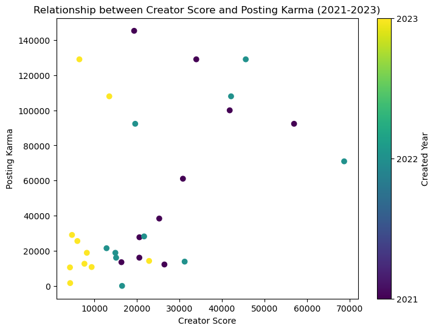

#Get posting karma of the creator from Python Reddit API Wrapper
def udf_get_karma(author_str):
#Reddit API Credential
client_id = 'UViHJJ217cLodAY9AraMWg'
client_secret = 'dvpLKVfv7ItyQhHkYPPOK6o_ssI63w'
user_agent = 'android:com.example.myredditapp:v1.2.3 (by u/sf_suzyfeng)'
#Reddit Username
username = 'sf_suzyfeng'
#Initialize a Reddit instance
reddit = praw.Reddit(client_id=client_id,client_secret=client_secret,user_agent=user_agent)
try:
redditor= reddit.redditor(author_str)
link_karma= redditor.link_karma
#if the account was deleted or ..., set Karma to 0
except:
link_karma= 0
return link_karmaExternal resource: www.Reddit.com, Google Index
new varaible : posting_karma
“Karma is a reflection of how much a Redditor’s contributions mean to the community. Making posts that communities find valuable is the way to gain Karma.” –Reddit.com
Distribution of posting_karma:
import pandas as pd
import matplotlib.pyplot as plt
df= pd.read_csv('../../data/csv/sampled_creators_top10_total.csv')
# Filter DataFrame for years 2021, 2022, and 2023
filtered_df = df[df['created_year'].isin([2021, 2022, 2023])]
# Scatter plot for posting_karma and creator_score
plt.figure(figsize=(8, 6))
scatter = plt.scatter(filtered_df['creator_score'], filtered_df['posting_karma'], c=filtered_df['created_year'], cmap='viridis', marker='o')
plt.title('Relationship between Creator Score and Posting Karma (2021-2023)')
plt.xlabel('Creator Score')
plt.ylabel('Posting Karma')
plt.colorbar(scatter, ticks=[2021, 2022, 2023], label='Created Year')
plt.show()
import plotly.express as px
# ... (your existing code)
# Create a scatter plot using Plotly
fig = px.scatter(filtered_df, x='creator_score', y='posting_karma', color='created_year', title='Relationship between Creator Score and Posting Karma (2021-2023)')
# Save the Plotly figure as an HTML file
fig.write_html('../../data/plots/karma_score_relation.html')

X-Axis (
Creator Score): Represents the influencers’ scores related to their popularity and frequency within the subreddit.Y-Axis (
Posting Karma): Indicates the posting karma earned by the influencers for their posts, reflecting the contributions to the community.Color Code (
Created Year): Differentiates data points based on the year the influencer’s post was created (2021, 2022, or 2023).
Interpretation: -The correlation coefficient between posting karma and creator score for the provided data is approximately 0.46. - Users with higher posting karma tend to have higher creator scores, suggesting a positive association between these two variables.
- Strength of Relationship:
- The positive correlation indicates that as posting karma increases, there is a tendency for the creator score to increase as well.
- The strength of the correlation is considered moderate. It’s not a perfect correlation, but there is a discernible pattern.
- Interpretation:
- Users with higher posting karma tend to have higher creator scores, suggesting a positive association between these two variables.
Why we choose to select Google Index as Reference Data?
Accessing external data from Google’s index of top brands and products in the Makeup and Skincare industry can offer invaluable insights for businesses. Firstly, it serves as a powerful tool for market research by unveiling current consumer trends and preferences. Identifying the most popular brands and products enables companies to stay competitive and understand the dynamics of the market. Additionally, this data facilitates competitor analysis, allowing businesses to benchmark themselves against industry leaders and identify opportunities for improvement or innovation. The information gleaned can inform product development strategies by revealing gaps in the market and areas where consumer needs are not adequately addressed.
Moreover, understanding the top brands and products aids in the formulation of effective marketing strategies. It provides insights into target audiences and helps tailor promotional efforts to align with consumer interests. For businesses focusing on online presence, analyzing this data contributes to SEO optimization by identifying relevant keywords that resonate with consumer searches. This, in turn, enhances the visibility of the business in online search results.
Furthermore, the data can guide content creation efforts, ensuring that businesses produce timely and relevant material that aligns with consumer interests. It also opens up opportunities for partnerships and collaborations with successful brands, leveraging their popularity to reach a broader audience. Lastly, monitoring the popularity of brands and products through Google’s index provides a means of risk mitigation by keeping businesses informed about market stability. Sudden shifts in consumer preferences or emerging trends can be detected early, allowing for proactive adjustments to business strategies. In essence, accessing external data from Google’s index is a multifaceted approach that empowers businesses across various aspects of the Makeup and Skincare industry, facilitating informed decision-making and sustained relevance in a dynamic market.
Why we Only get Top 5 for both skincare and makeup brands and products?
Due to the fluctuating nature of the top 10 skincare and makeup brands and product quantities each year, for the sake of analytical consistency, we have opted to exclusively focus on the top 5 brands and products for the years 2021-2023, along with Google Index data. The comparative analysis results are summarized below.
For skincare Products
Comparative Analysis of Top 5 Skincare Products (2021-2023)
2021:
In 2021, the top 5 skincare products on Reddit were predominantly moisturizer, sunscreen, mask, serum, and cleanser. Notably, moisturizer had the highest average Google index of 76, indicating a significant online presence. Sunscreen and mask followed closely with indices of 22 and 64, respectively. Serum and cleanser also ranked high with indices of 65 and 38, respectively. This suggests that, according to Reddit discussions, moisturizers were highly discussed and popular, aligning with their strong online visibility.
2022:
The skincare landscape shifted in 2022, with sunscreen taking the lead in both Reddit mentions and average Google index (23). Moisturizer maintained a strong presence with an index of 63, indicating sustained popularity. Serum and cleanser also continued to be discussed, with indices of 70 and 33, respectively. Notably, BHA (beta hydroxy acid) entered the top 5, indicating a growing interest in specific skincare ingredients. This suggests a dynamic shift in consumer preferences and a diversification of the most talked-about products on Reddit.
2023:
In 2023, the top 5 products on Reddit included moisturizer, sunscreen, serum, cleanser, and essence. Moisturizer maintained its high average Google index of 80, reaffirming its popularity. Sunscreen also remained significant with an index of 28. Serum saw a slight increase in index to 82, indicating sustained interest. Cleanser and essence rounded out the top 5, with cleanser seeing a minor increase in index (36). The addition of essence suggests a growing focus on specific skincare steps beyond traditional products.
Comparative Analysis Result:
Meaningful Insights for Business Goals: - Moisturizer Dominance: Moisturizer consistently held a strong position throughout the three years, indicating its enduring popularity and importance in skincare routines.
Sunscreen’s Steady Presence: Sunscreen remained a key focus, underlining the consistent emphasis on sun protection in skincare discussions.
Dynamic Shifts in Product Interest: The emergence of BHA in 2022 and essence in 2023 suggests an evolving interest in specific skincare ingredients and steps beyond the traditional routine.
Sustained Interest in Serum: Serum consistently maintained a high level of interest, showcasing its significance in skincare discussions.
Cleanser’s Stability: Cleanser consistently ranked in the top 5, indicating its steady relevance in skincare routines.
Conclusion
In summary, the skincare landscape witnessed dynamic changes over the three years, with certain products maintaining their popularity (e.g., moisturizer, sunscreen) and others entering the spotlight (e.g., BHA in 2022, essence in 2023). These trends highlight the evolving preferences and interests within the skincare community, as reflected in both Reddit discussions and the average Google index of the mentioned products.
For skincare Brands
Comparative Analysis of Top 5 Skincare Brands (2021-2023)
2021:
In 2021, Reddit discussions on skincare revealed a clear hierarchy of popular products. Moisturizer emerged as a standout, with a substantial Google index of 76, indicating its widespread recognition and usage. Sunscreen followed closely with an index of 22, underlining its importance in skincare routines. Notably, masks garnered considerable attention, boasting a high index of 64. Serums and cleansers also held strong positions in the top 5, with indices of 65 and 38, respectively. This data suggests a balanced interest in a variety of skincare categories, with a particular focus on moisturizing and protective measures.
2022:
The skincare landscape underwent notable changes in 2022. Sunscreen surged to the forefront, both in Reddit mentions and with the highest average Google index of 23, indicating an increased emphasis on sun protection. Moisturizer maintained its popularity with a substantial index of 63, suggesting its enduring significance. Serum experienced a significant boost in interest, reflected in its elevated index of 70. Cleansers remained in the top 5 but with a slightly reduced index of 33. Notably, the introduction of BHA to the top 5 indicated a growing fascination with specific skincare ingredients.
2023:
In 2023, the skincare discussions continued to evolve. Moisturizer retained its dominance, boasting an increased Google index of 80. Sunscreen, although slightly less prominent than moisturizer, maintained a significant presence with an index of 28. Serum sustained its high level of interest with an impressive index of 82. Cleansers continued to be relevant, though with a slightly diminished index of 36. Essence made its appearance in the top 5, reflecting a growing interest in additional skincare steps beyond the conventional routine. This suggests an expanding and diversifying landscape of skincare preferences.
Comparative Analysis Result:
Meaningful Insights for Business Goals:
Consistent Favorites: Moisturizer and sunscreen consistently held top positions, emphasizing their enduring importance in skincare routines.
Dynamic Shifts: The inclusion of BHA in 2022 and essence in 2023 showcased evolving interests, reflecting a dynamic and diverse skincare landscape.
Sustained Interest in Serums: Serums consistently maintained a high level of interest, indicating their significance in skincare discussions.
Cleanser’s Stability: Cleansers remained relevant, though with slight variations in popularity.
Conclusion
In conclusion, the skincare landscape evolved over the three years, with certain products maintaining their popularity and new elements entering the spotlight. The consistent dominance of moisturizer and sunscreen, along with the emergence of specific ingredients like BHA and steps like essence, highlights the dynamic and diverse nature of skincare trends within the Makeupaddiction community. The Google indices provide quantitative insights into the online visibility and discussions surrounding these products.
For Makeup Brands
Comparative Analysis of Top 5 Makeup Brands (2021-2023)
2021:
In 2021, the landscape of makeup brands on Reddit showcased a clear hierarchy. Mac dominated the discussions, securing the top position with a considerable Google index of 49, indicative of its widespread recognition and popularity. Maybelline, although ranking second in Reddit mentions, had a notably lower average Google index of 6, suggesting potential for increased online visibility. Nyx and Sephora held their positions in the top 5, with Sephora displaying a higher index of 28, emphasizing its strong online presence. Loreal, with a significant index of 34, rounded out the top 5, demonstrating sustained popularity.
2022:
The makeup landscape underwent notable changes in 2022. Maybelline surged to the forefront, taking the lead with an increased average Google index of 7, indicating growing popularity and online visibility. Mac maintained its stronghold with a consistent index of 49, affirming its enduring brand recognition. The introduction of Nars and Colourpop to the top 5 showcased evolving interests, with Colourpop entering the list despite having a low Google index of 1. Sephora continued to be a significant player, with an increased index of 37.
2023:
In 2023, the makeup discussions continued to evolve, revealing shifts in brand preferences. Elf emerged as the top brand with a moderate average Google index of 16, indicating a rise in popularity. Maybelline maintained its strong presence with a consistent index of 15, underscoring its continued popularity. Nyx retained its relevance with a moderate index, while Benefit entered the top 5, showcasing a growing interest. Mac, while still popular, saw a decrease in index, suggesting a slight decline in online visibility.
Comparative Analysis Result:
Meaningful Insights for Business Goals:
Maybelline’s Consistency: Maybelline consistently held a top position across the three years, maintaining popularity and relevance.
Mac’s Enduring Presence: Mac remained a dominant force, consistently ranking high in both Reddit mentions and Google index, showcasing enduring brand recognition.
Dynamic Shifts: The introduction of new brands like Nars, Colourpop, Elf, and Benefit reflected dynamic shifts and evolving interests in the makeup community.
Sephora’s Steady Presence: Sephora consistently held a strong position, reflecting its sustained popularity and significance.
Conclusion:
The makeup landscape experienced dynamic shifts over the three years, with certain brands maintaining their popularity and new entrants gaining traction. Maybelline consistently held a top position, while Mac demonstrated enduring brand recognition. The introduction of new brands and fluctuations in Google indices indicate the ever-evolving nature of makeup brand preferences within the Makeupaddiction community. The Google indices provide valuable insights into the online visibility and discussions surrounding these brands.
For Makeup Products
Comparative Analysis of Top 5 Makeup Products (2021-2023)
2021:
In 2021, the landscape of makeup products revealed interesting patterns. Mascara emerged as the most-discussed product with a notably low average Google index of 5, suggesting room for increased online visibility and discussions. Foundation and Lipstick secured the second and third positions with indices of 27 and 55, respectively, indicating a moderate to high level of interest. Concealer had a low index of 3, signaling potential for increased online visibility, while Powder rounded out the top 5 with a moderate index of 10.
2022:
The makeup landscape witnessed dynamic shifts in 2022. Foundation surged to the forefront, claiming the top spot with a significantly higher average Google index of 50, showcasing a substantial increase in popularity. Mascara maintained its relevance with an increased index of 10, indicating sustained popularity. Lipstick held a strong position with an impressive index of 79, affirming its enduring popularity. Concealer sustained interest with a moderate increase in average index. Powder remained in the top 5 but with an increased index of 20, reflecting growing interest.
2023:
In 2023, the makeup discussions continued to evolve, revealing shifts in product preferences. Mascara continued to be a popular choice, with a moderate increase in average index, indicating sustained interest. Foundation retained its relevance with a moderate increase in average index, suggesting continued popularity. Lipstick maintained a strong presence with a moderate average index, showcasing consistent popularity. Primer entered the top 5 with a low average index of 5, indicating potential for increased online visibility. Eyeliner rounded out the top 5 with a moderate increase in average index, reflecting sustained interest.
Comparative Analysis Result:
Meaningful Insights for Business Goals:
Trend Identification: Foundation consistently emerged as a significant trend, experiencing a substantial increase in popularity in 2022. This trend continued in 2023, reinforcing its importance in the makeup industry.
Stable Performers: Mascara, lipstick, and concealer remained stable performers across the three years, indicating their enduring popularity and consistent relevance to makeup enthusiasts.
New Entrants: Primer entered the top 5 in 2023, suggesting a potential emerging trend or heightened interest in this makeup product. This insight could be valuable for businesses looking to capitalize on evolving consumer preferences.
Sustained Interest: Products like mascara and foundation consistently held the top positions, indicating sustained interest and popularity. This stability could guide business strategies for product development, marketing, and inventory management.
Conclusion:
In conclusion, the comparative analysis of makeup products from 2021 to 2023 provides valuable insights into shifting trends, stable performers, and potential emerging products. Businesses can leverage this information to align their strategies with consumer preferences, optimize marketing efforts, and capitalize on the evolving landscape of makeup trends.